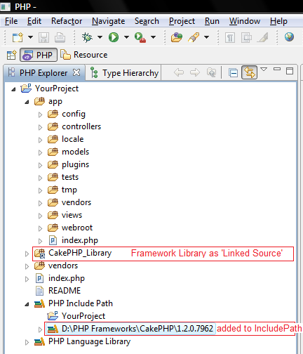
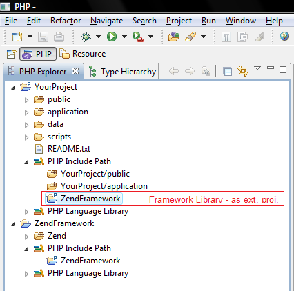
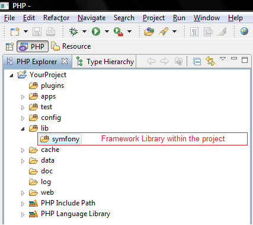

Prologue
As a PHP developer you have the privilege of choosing from a variety of PHP frameworks, each with its own pros and cons.
However, in order to maximise the benefit you get from your framework, you should utilize the advantages provided by the PDT development tool.
Getting your framework of choice
There are several open source PHP frameworks out there. See 'External Links' section at the bottom of this artice for a comparison of the leading frameworks.
Download the one that suits you most, unpack and put it under your ‘htdocs’ directory.
e.g. under: C:\Program Files(x86)\Zend\Apache2\htdocs, or C:\xampp\htdocs\
Different frameworks provide different advantages. Read as many comments from other developers as you can before deciding which one to use.
Getting and installing the Eclipse and PDT tool
If you have all the required dependencies, you can add the PDT tool as a (runtime) plugin to your existing Eclipse environment.
Alternatively, you can download the All-In-One package supplied by PDT, which includes all the dependencies you need to start working.
These can be downloaded from the PDT Downloads page.
What is the Eclipse workspace?
The workspace is the place where you store your projects and project settings. Essentially, it is a directory on your hard drive. Eclipse will ask you to set your workspace the first time you run it.Defining your workspace
There are no fixed rules, but I would advise you to set your workspace to your htdocs directory (for example C:\\xampp\\htdocs\\).Workspaces can be defined after startup by going to : File > Switch Workspace > Other
What are Eclipse projects?
Projects (as you might expect) are the applications you are developing.In our case, these are Framework applications - the things that start out life as a copy of your app folder.
Creating a new PHP Project
1. Launch Eclipse, and switch to the PHP perspective.
2. From the Menu Bar, go to File > New > PHP Project.
3. In the Project name field, type your application's name.
4. Click the ‘Finish’ button, and the project will be created. You will be able to browse your new project in the ‘PHP Explorer’ view.
5. Create your framework directory structure.
You are advised to use the Quickstart guides (see ‘external links’ section below)
PHP Include Paths
The PHP Include Path is a set of locations that is used for finding resources referenced by include/require statements.
Build Paths
The Eclipse build process scans all resources that are on the project's Build Path so that elements defined within them can be made available for Code Assist options. This is done in order to get notification about changes in the file system (e.g. files added/removed from the project, code changes etc.) and in order to maintain the code database (user classes, functions, variables etc.).
To change them, go to : Project's Properties > JavaScript > JavaScript Libraries > 'Source' tab, and configure the JavaScript buildpath by adding/removing relevant folders.
Adding the Framework Library to your project
There are several ways to "attach" the framework code to your project.
1. Link source to Framework location (example #1)
+ Production-server-ready - assuming the same framework location
- When sharing code /co-programming, the other developer will need to set this link as well.
2. Create a seperate project that will hold the framework library code (example #2)
+ Very modular, using framework as a "black-box". (easier version update etc')
- Need to define the "real" location of the framework on the production-server.
3. Copy the code into the project itself (example #3)
+ This will ensure you won't be dependent on where/if this specific framewrok version is installed on your production server
- Redundant code - each application will include the framework code.
Example Projects
Example #1 - CakePHP Project |
Example #2 - ZendFramework Project |
Example #3 - Symfony Project |
References
http://bakery.cakephp.org/articles/view/setting-up-eclipse-to-work-with-cake
External Links
Framework website URLs QuickStart Guide URLs Symfony http://www.symfony-project.org http://www.symfony-project.org/tutorial/1_2/my-first-project Zend Framework http://framework.zend.com http://framework.zend.com/docs/quickstart Codeigniter http://codeigniter.com http://codeigniter.com/tutorials/watch/intro/ CakePHP http://cakephp.org http://book.cakephp.org/view/4/Beginning-With-CakePHP